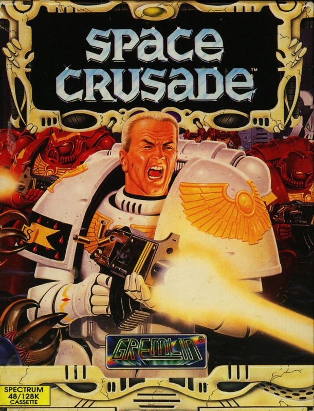
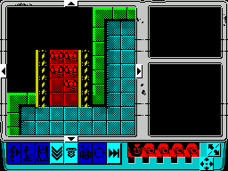
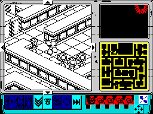

Space Crusade


{kind=link}

| Publisher: | Gremlin |
| Price: | £10.99 Cass, £15.99 Disk |
| Year: | 1992 |
| Source: | CRASH, Issue 97 |

Spooky place, space. Very dark and black, with nasty alien thingies everywhere. Not the sort of place you’d like to go for a holiday — even if there’s never a queue at the pool! That’s why we sent NICK ROBERTS on a Space Crusade...

Board games have been converted to computer since the year dot. Monopoly, Cluedo and the like have all put in an appearance and all lived up to their name — people rapidly became bored of them. They simply never worked as computer games.
Gremlin turned around the tradition with the release of a sword and sorcery jaunt, Hero Quest, which created a three dimensional world that was fun to play in and great to look at. Now prepare yourself for the follow-up — Space Crusade!
The player’s plopped into the middle of an alien spacecraft as part of a Space Marine battalion. There are nasty mutant thingies out there and they’ve got to be blown to oblivion before they use the marines as main course!
ARMS AND ARMIES

There are 12 missions to choose from and the ability to load in new ones, when they’re made available. Each has a different objective but don’t worry, they all include lots of blasting action!
The great thing about Space Crusade is that up to three punters can play at the same time, taking it in turns to make their moves as they would playing the board game.
Marine Chapters (sort of like teams — Prod Ed) to choose from are Blood Angels, Imperial Fists and Ultra Marines. Each player’s in command of five warriors and all have to be equipped with weapons before setting foot in the dangerous corridors of the ship. Different missions need different weapons from the armoury, which includes axes, plasma guns, assault cannons, missile launchers and power swords.
CRAFTY COMPUTERS
When all players have taken their turn, the computer moves the aliens around the ship and takes any necessary action. By this I mean either chewing your head off or walking straight by!
The nasties are familiar to anyone who’s played Gremlin’s Hero Quest — they’re mutations of the ones found in the game. Skeletons have become androids, goblins are now gretchins, orcs are orcs (really?) and Chaos knights have transformed into Chaos Space Marines.
These may seem an unfriendly bunch of fellows (they wouldn’t buy you a pint down the Star & Moonbeam) but they’re pansies compared to the big cheese of Space Crusade. Looking like a close cousin of ED—209 from RoboCop is the Dreadnought. If a player so much as sneezes in his general direction, he lets loose with the massive firepower at his disposal and it’s goodbye cruel world (or should that be galaxy?).
PLAY IT AGAIN, SAM!

Handy icons include the scanner which allows the player to take a peek into nearby rooms to discover what lurks inside. This can save the skins of the marines by avoiding contact with anything green and slimey (snotty aliens, surreal! — Ed)!
If you’ve played the board game you’ll know all about the special cards collected throughout the game. They’re called Order Cards and allow a Commander to gain access to the computer of the mother ship and blast away.
The great joy of Space Crusade is it can either be played purely as a strategy game or the player can flip to and from the 3D view of the spacecraft and have a good look at the aliens’ ugly mugs close-up.
Onscreen you get the main view area with selectable icons below it. Then there’s a general overview of the whole ship with aliens and marines marked on it and a box showing any commendations or weapons the current player’s acquired.
To find out what’s going on in another section of the ship, the player simply clicks the pointer on another part of the map.
MORE PACKED THAN A TOFFEE CRISP!
There’s so much programmer Paul Hiley and graphic artist Ade Carless have packed into the game it’s no wonder they had to make it 128K only. All the missions, both views and the hundreds of rules and regulations from the original game have been crammed into one load!
Graphics are excellently drawn and detailed in both the strategy and 3D views. Each sprite has several frames of animation, and the only difference between the Spectrum and 16-bit versions is the lack of colour.
There’s no way anyone who buys Space Crusade is going to become bored and complete it within a few hours. Days or months, even years are more like it! With new missions being devised as we speak, Space Crusade is a purchase that will keep you occupied for the rest of your life (probably)!
NICK — 90%

After spending several millennia slotting the small plastic pieces of the board game together (and kicking Hubert, my pet kipper, around the room), I thought ‘Sod it’ and played the computer version. The character sprites are small but wonderfully animated, especially the ED-209 style Dreadnought robot. The amount of stuff packed in is quite incredible for the Spectrum — it must take months to learn all the different options. Nail-biting tension builds up as the marines yomp through the derelict ship. Trouble is, they often get their heads ripped off a few seconds later (sounds familiar!). Whether or not you’re a fan of roleplaying games, Space Crusade’s a most awesome game (dude).
LUCY — 92%
RATING
An excellent conversion of the board game that’ll keep you busy late into the night!
| Presentation: | 91% |
| Graphics: | 92% |
| Sound: | 88% |
| Playability: | 91% |
| Addictivity: | 89% |
| Overall: | 91% |